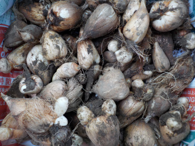
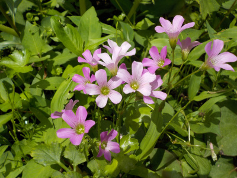
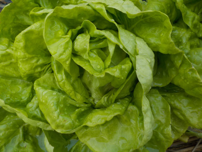
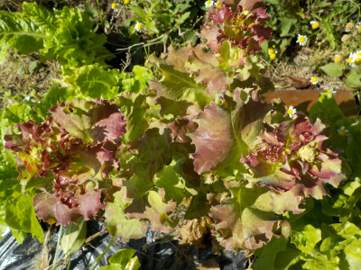
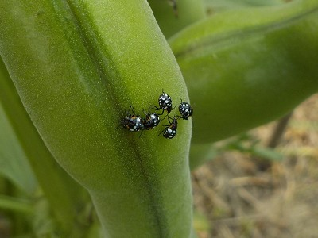
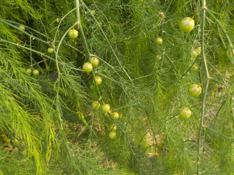
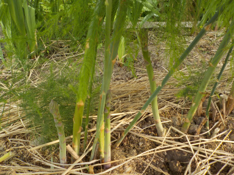
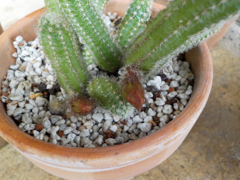

フリージアの球根を掘りました。
2019/06/23
枯れた葉っぱの下を掘って球根を採りました。

花の大きさの割には球根が小さいですね。
しばらく保管です。
2019/06/23
枯れた葉っぱの下を掘って球根を採りました。

花の大きさの割には球根が小さいですね。
しばらく保管です。
2019/06/23
ピンクの花がとっても目立ってました。

普通に綺麗。
普段から咲いてれば花壇にあってもよさそうですが。あったらあったで邪魔かな。
種落ちてドンドン増えるもんな。
2019/06/16
サラダ菜はクセがないのでいっぱい食べれます。

沢山収穫しても問題ないです。
マヨネーズで食べるのが好きかな。
2019/06/09
レタスの葉っぱの色が薄くなり、表面のツヤがなくなっています。

こうなったレタスは苦くて不味いです。
もう食べません。勝手に花でも咲かせてください。
2019/06/02
ちっちゃくてちょっとキラキラした虫が集まってました。

何か野菜に悪いことをしてそうです。
調べたらソラマメゾウムシっぽいです。そら豆に産卵するつもりですね。
2019/06/02
アスパラガスがうっそうと茂っています。

この実は放置でいいのかな。

種に栄養を取られるとかあるのかな。
でも種をむしり取るのは面倒。
2019/06/02
今迄ちゃんと管理していなかったので花が咲いてた記憶がないです。

花が咲くんですね。
このサボテンはビャクダンって名前のようです。
過去の日記
畑仕事じゃないよ。